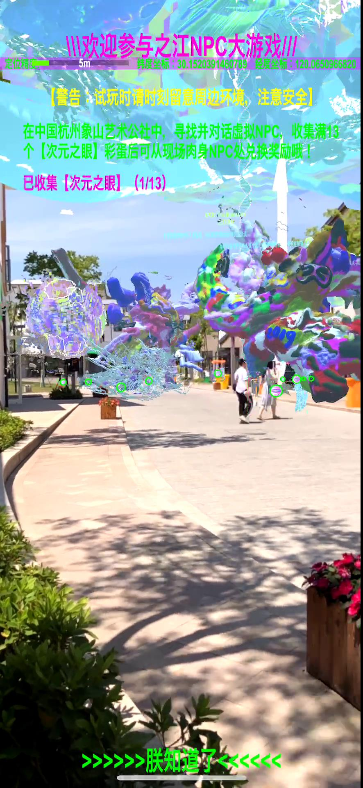
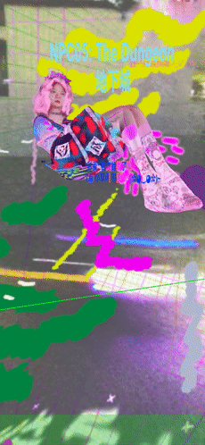
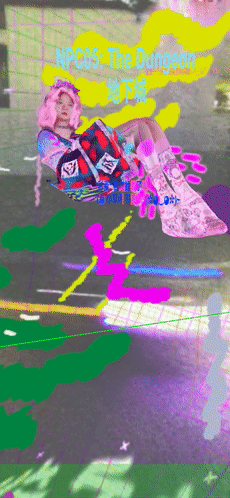

Hyperbation: NPC大游戲，之江星體概念圖，杭州，中國，2019
Hyperbation: NPC大游戲，之江星體概念圖，杭州，中國，2019
NPC大游戲/ NPCplay
在杭州象山藝術公社中
與各個肉身NPC（非玩家角色）對話
並用手機掃描黑白符文
在本AR APP裏
直到之江星體坍縮之前
尋找虛擬空間中的NPC並得到相關CP綫索
 NPC大游戲，In-game Screenshots，杭州，中國，2019
NPC大游戲，In-game Screenshots，杭州，中國，2019
收集完所有【次元之眼】彩蛋之後即可兌換封印了之江超體的符文作爲獎勵
 NPC大游戲：次元之眼與小姐姐彩蛋，In-game Screen Recordings，杭州，中國，2019
NPC大游戲：次元之眼與小姐姐彩蛋，In-game Screen Recordings，杭州，中國，2019
NPC大游戲是一款AR（增强現實）游戲，其通過結合地理定位技術與增强現實技術，將虛擬的NPC們（之江星體、之江超體、之江NPC）叠加在了象山藝術公社的物理空間之中。玩家將在物理/虛擬空間中遭遇各種角色並發現未名之物！

 NPC大游戲：之江星體坍縮，In-game Screen Recordings，杭州，中國，2019
NPC大游戲：之江星體坍縮，In-game Screen Recordings，杭州，中國，2019
In the Elephant Mountain Art Commune of Hangzhou
Talking to each physical NPC (Non-player Character)
Scanning the black and white runes
Then in this AR app, before the collapse of the Zhijiang Astrobody
Searching for the NPC in the virtual space and obtaining CP clues
After collecting all the [Dimensional Eyes] you can exchange them for a piece of Zhijiang Hyperbody Rune as a prize.
NPCplay is a AR (Augmented Reality) game. It combines geolocation technology with augmented reality technology to cast virtual NPCs (Zhjiang Astrobody, Zhijiang Hyperbody and Zhijiang NPC) on the actual physical space of Elephant Art Commune. Players will face various characters and discover hidden mysteries between the virtual and actual spaces.
NPC大游戲：之江神牛&大象超體，In-game Screen Recordings，杭州，中國，2019